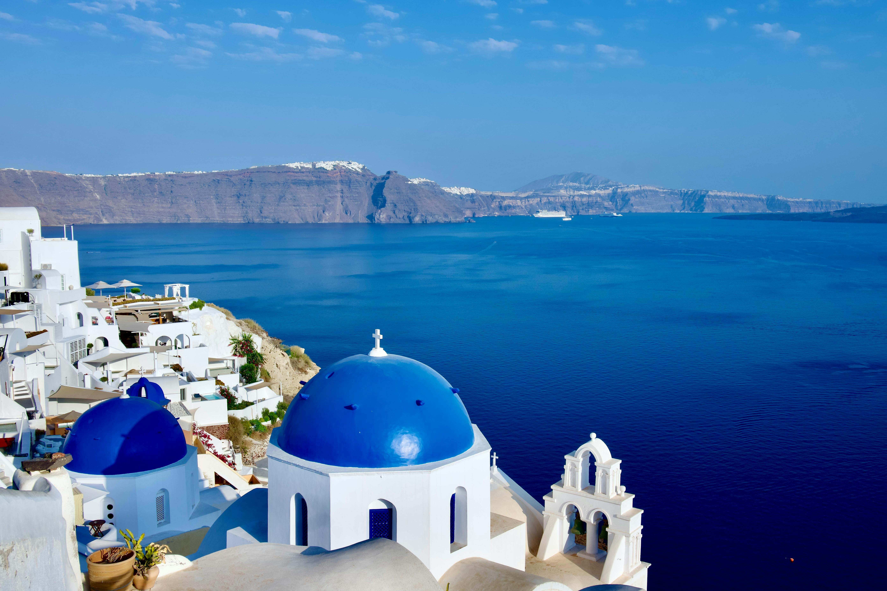
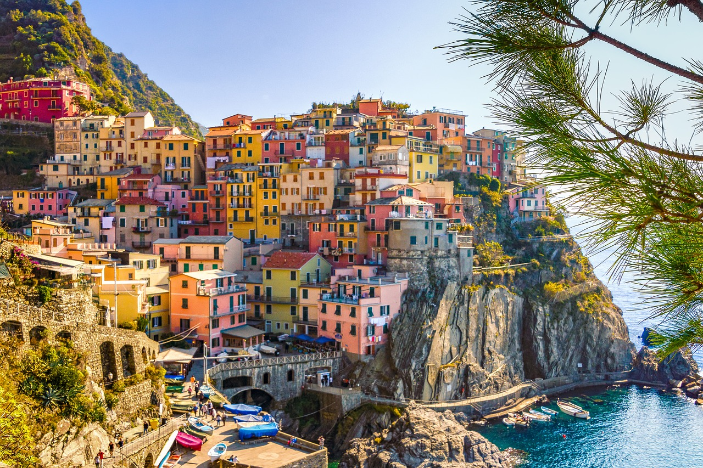
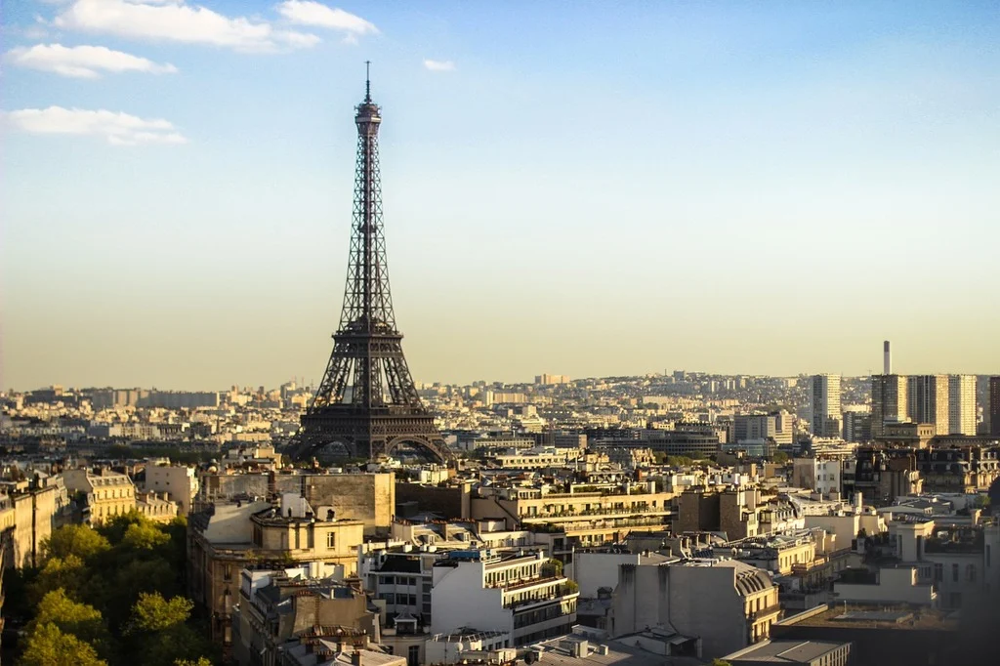

Popular Travel Spots ✈️
Some of the world's most popular travel destinations each offer different kinds of culture and awe. Greece shows its ancient ruins, popular mythology, and beautiful islands like Santorini. Italy blends history, art, and food throughout the canals and colosseum. Hawaii offers a tropical escape with grand landscapes, volcanic views, and gorgeous blue seas. Paris is known as the city of love that enchants travelers with landmarks like the Eiffel Tower and the historic museums.
Greece

"Coccinella Macro - Lady Bug - Dino Olivieri" by Dino Olivieri, here cropped, is licensed under CC BY 2.0.
Greece is one of Europe's most compelling destinations, where you see a mixture of Ancient culture and modern adventures. It is most known for its magical clear blue waters, where you can enjoy a day on the boat or go snorkeling. Greece still has many ancient ruins where tourists can visit and experience. The magnificent sunsets are the best way to end a day in Europe.
What to do in Greece
Italy

CC0 1.0 Public Domain
For those traveling to Italy for the first time, many are just attracted to the main attractions of Italy, but the more people go, they begin to dive deeper into Italy's deep culture. Italy is a wonderful place to have relaxation while also offering so many adventures. A main attraction of Italy is its variety of foods and delicious gelato.
What to do in Italy
Hawaii

"Coccinella Macro - Lady Bug - Dino Olivieri" by Dino Olivieri, here cropped, is licensed under CC BY 2.0
Hawaii is a tropical island known for its rich culture and land. Travelers can take a hike and see waterfalls and many different animals. You can enjoy a nice day by the pool or go swimming with dolphins. Hawaii is a perfect getaway for anyone who is looking for a mixture of relaxation and some fun.
What to do in Hawaii
Paris

CC0 1.0 Universal
Known as the city of love, Paris is the go to destination for art, culture, and fashion. The Eiffel Tower is the most known landmark, where you can enjoy a picnic next to or climb all the way to the top to get a 360 view of all of Paris. The rich art is seen all throughout Paris just when walking the streets or taking the train. Enjoy a coffee and croissant in a corner restaurant and soak in the sounds around you.
What to do in Paris